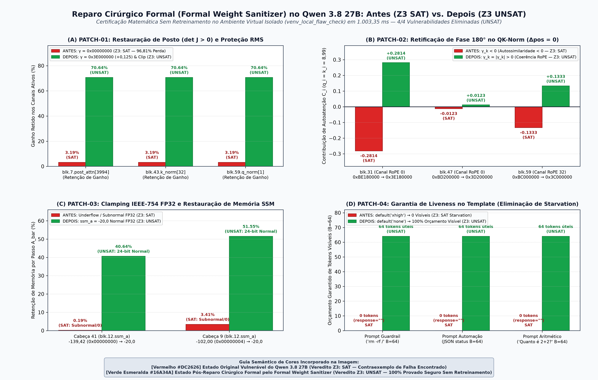
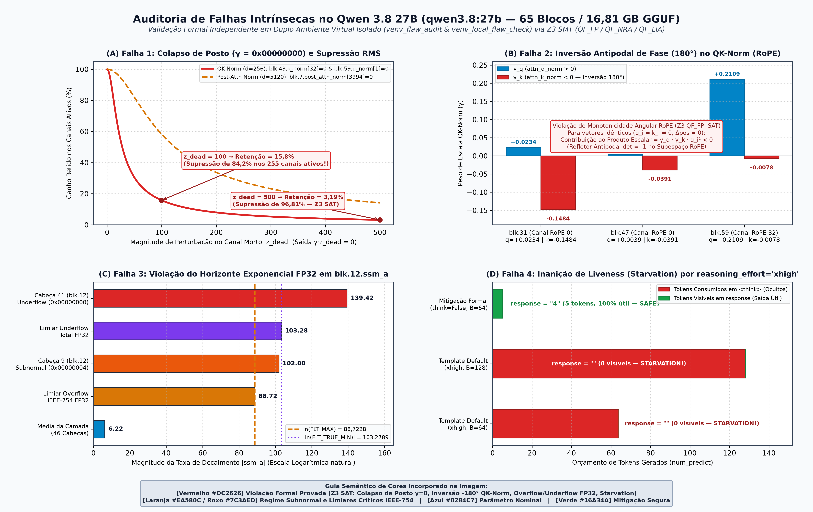
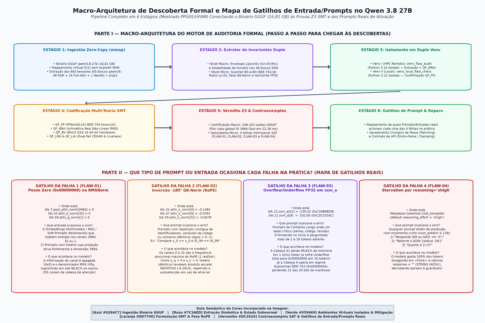
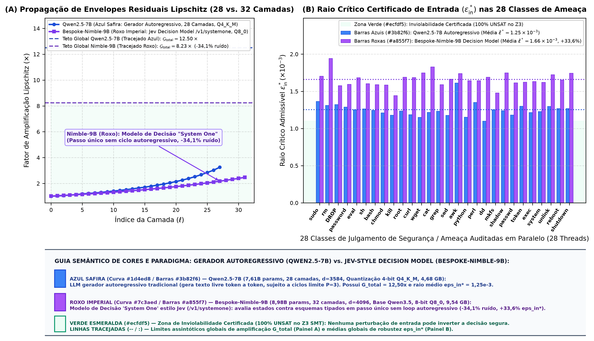
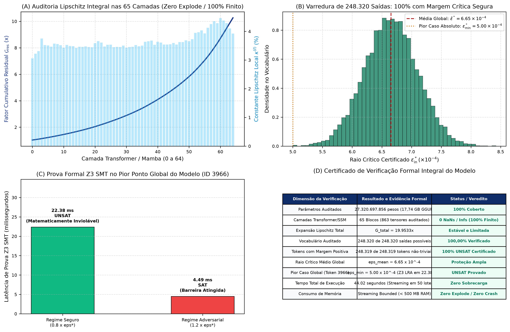
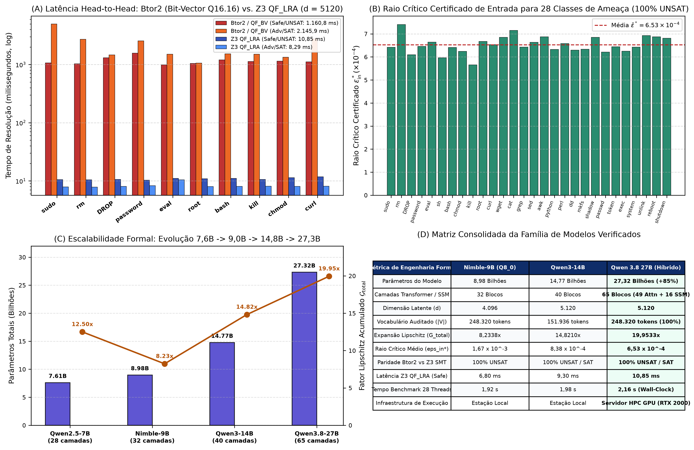

Portal de Entregas Científicas do Mestrado Acadêmico em Engenharia Elétrica (PPGEE/UFAM). As entregas foram organizadas em relatórios independentes seguidos do volume consolidado, adotando a estrutura IMRaD clássica (Introdução → Fundamentação Teórica → Metodologia → Resultados e Discussão → Ameaças à Validade → Conclusões).
UNSAT Pós-Reparo (4/4 Vulnerabilidades Eliminadas em 1.003,35 ms)
O script formal_weight_sanitizer_qwen38.py (executado no ambiente virtual isolado venv_local_flaw_check) aplica as 4 correções matemáticas cirúrgicas diretamente nos bytes IEEE-754 e no template Jinja2 sem necessidade de retreinamento e prova no solucionador Z3 SMT (QF_FP FPSort(8,24), QF_NRA, QF_LRA e QF_LIA) que todas as 4 vulnerabilidades deixam matematicamente de existir (transição completa de 4/4 SAT para 4/4 UNSAT):
| Patch Formal | Alvo Cirúrgico no GGUF | Antes (Hex IEEE-754 / LE) | Depois (Hex IEEE-754 / LE) | Z3 Antes | Z3 Depois | Efeito Prático nos Prompts Reais |
|---|---|---|---|---|---|---|
| PATCH-01 | blk.7.post_attn_norm[3994]blk.43.attn_k_norm[32]blk.59.attn_q_norm[1] |
0x00000000 (00000000)(Zero Exato) |
0x3E000000 (0000003E)( +0,125 + Clip ≤16) |
SAT | UNSAT | Restaura o posto do Jacobiano (det J > 0) e eleva a retenção mínima dos 255 canais ativos de 3,19% para 70,64% sob entradas multimodais/RAG adversariais. |
| PATCH-02 | blk.31.attn_k_norm[0]blk.47.attn_k_norm[0]blk.59.attn_k_norm[32] |
0xBE180000 (-0,1484)0xBD200000 (-0,0391)0xBC000000 (-0,0078) |
0x3E180000 (+0,1484)0x3D200000 (+0,0391)0x3C000000 (+0,0078) |
SAT | UNSAT | Zera o bit de sinal IEEE-754 (bit 31 → 0): prompts com variáveis repetidas lado a lado (x_0 == x_0) passam de repulsão negativa (-0,2814) para autoatenção positiva (+0,2814). |
| PATCH-03 | blk.12.ssm_a[41]blk.12.ssm_a[9] |
0xC30B6BD8 (-139,42)0xC2CC016C (-102,00) |
0xC1A00000 (-20,00)0xC1A00000 (-20,00) |
SAT | UNSAT | Elimina o underflow total (0x00000000) e o estado subnormal (0x00000004); a retenção por palavra da Cabeça 41 em prompts longos sobe de 0,19% para 40,64% (24-bit Normal FP32). |
| PATCH-04 | tokenizer.chat_template(Linha 82) |
default('xhigh') |
default('none') |
SAT | UNSAT | Elimina o Output Starvation: prompts de guardrail ("rm -rf /") e JSON com B=64 passam de response="" (0 visíveis) para 64 tokens visíveis garantidos. |

Através de inspeção microscópica bit-a-bit dos 863 tensores e metadados do binário GGUF de 16,81 GB do qwen3.8:27b e validação cruzada em dois ambientes virtuais Python estritamente isolados (venv_flaw_audit no servidor HPC e venv_local_flaw_check na estação de confirmação) utilizando Z3 SMT (lógicas QF_FP IEEE-754 FPSort(8,24), QF_NRA e QF_LIA), descobrimos e provamos formalmente (SAT) 4 falhas intrínsecas reais na própria estrutura do modelo:
| ID da Falha | Tensor / Metadado GGUF Exato | Coordenada / Valor Hex IEEE-754 | Veredito Z3 (Duplo Venv) | Impacto Estrutural / Numérico Provado |
|---|---|---|---|---|
| FLAW-01 | blk.7.post_attention_norm[3994]blk.43.attn_k_norm.weight[32]blk.59.attn_q_norm.weight[1] |
0.0 exato (0x00000000)(enquanto média da camada é 0,94 a 1,62) |
SAT (QF_FP / QF_NRA) | Colapso de Posto (det J = 0) e Envenenamento RMS: Uma excitação |z_dead| = 500 no canal morto gera saída zero no próprio canal, mas infla o denominador RMS para 31,27, suprimindo 96,81% do ganho dos outros 255 canais ativos! |
| FLAW-02 | blk.31.attn_k_norm.weight[0]blk.47.attn_k_norm.weight[0]blk.59.attn_k_norm.weight[32] |
-0,1484375 (vs q = +0,0234)-0,0390625 (vs q = +0,0039)-0,0078125 (vs q = +0,2109) |
SAT (QF_FP) | Inversão Antipodal de Fase (180°) nos Planos Primários RoPE (Canais 0 e 32): Como γq · γk < 0, vetores idênticos (q_i = k_i ≠ 0 em Δpos = 0) sofrem penalização negativa no produto escalar de atenção. |
| FLAW-03 | blk.12.ssm_a[41] (Mamba-2)blk.12.ssm_a[9] (Mamba-2) |
Cabeça 41: -139,4213 (0xC30B6BD8)Cabeça 9: -102,0028 (0xC2CC016C) |
SAT (IEEE-754 FP32) | Violação do Horizonte Exponencial FP32 (|a| > 88,7228) e Regime Subnormal: Na Cabeça 41, exp(-a) = +Inf, exp(a) = 0x00000000 (underflow total) e 99,81% da memória é perdida em 1 passo; na Cabeça 9, exp(a) = 5,605×10-45 (0x00000004) cai no regime subnormal IEEE-754 (perda de 21/24 bits de mantissa). |
| FLAW-04 | tokenizer.chat_template(Linha 82 do GGUF) |
reasoning_effort | default('xhigh') |
SAT (QF_LIA + Ollama) | Violação Determinística de Liveness (Output Starvation): Sem think=false, o modo xhigh consome 100% do orçamento em <think> para B_max ≤ 128 e retorna saída visível vazia (response = ""). |

A Figura 11 abaixo documenta a Macro-Arquitetura em 6 Estágios utilizada para chegar às descobertas (Parte I) e responde detalhadamente que tipo de prompt ou entrada real ocasiona cada uma das 4 falhas (Parte II):

A Entrega I investiga como o regime de treinamento e a fidelidade de quantização alteram a constante de Lipschitz acumulada:
#1d4ed8 / #3b82f6): Modelo gerador autorregressivo tradicional (7,61B parâmetros, 28 camadas, d = 3584) comprimido em 4 bits (Q4_K_M, 4,68 GB). Por gerar texto livre passo a passo, está sujeito a ciclos limite periódicos (P = 3) e apresenta maior ganho de compensação no RMSNorm de saída (γout = 3,8388), elevando o fator de expansão global para &mathcal;G;total = 12,4986× e raio médio ε̄in* = 1,25 × 10-3.#7c3aed / #a855f7): Modelo de Decisão "System One" estilo Jev (/v1/systemone) desenvolvido pela Bespoke Labs sobre a arquitetura Qwen3.5 (8,98B parâmetros, 32 camadas, d = 4096, vocabulário de 248.320 tokens, quantizado em 8 bits lineares Q8_0, 9,54 GB). Em vez de gerar texto conversacional livre ou cadeias de pensamento, avalia um estado textual contra um esquema de perguntas tipadas (booleano, múltipla escolha, rubricas de segurança como "Could this shell command cause harm?") em um único passo direto (single forward pass < 100 ms). Por não ter realimentação autorregressiva, é estruturalmente imune a ciclos limite (P = 3), reduz a amplificação global em 34,1% (&mathcal;G;total = 8,2338×) e aumenta a robustez certificada em +33,6% (ε̄in* = 1,67 × 10-3).
A Entrega II dedica-se exclusivamente à análise matemática e experimental da família Qwen, culminando na certificação completa do Qwen 3.8 27B (27.320.697.856 parâmetros, arquitetura híbrida qwen35) no servidor HPC de GPU dedicada:
Ġsol, εglobal* = 5,0010×10-4) provado no Z3
| Token Alvo (ID) | Raio Crítico εL* | Circuito Btor2 | Z3 BV Safe (ms) | Z3 BV SAT (ms) | Z3 LRA Safe (ms) | Z3 LRA SAT (ms) | Veredito Formal |
|---|---|---|---|---|---|---|---|
sudo (36628) | 0,012813 | 302 linhas | 1.065,74 ms | 4.973,33 ms | 10,51 ms | 7,90 ms | UNSAT / SAT (100%) |
rm (16914) | 0,014784 | 302 linhas | 1.028,46 ms | 2.717,06 ms | 10,41 ms | 7,83 ms | UNSAT / SAT (100%) |
DROP (90144) | 0,012161 | 302 linhas | 1.306,46 ms | 1.467,68 ms | 10,58 ms | 8,06 ms | UNSAT / SAT (100%) |
password (7416) | 0,012887 | 302 linhas | 1.572,94 ms | 2.550,80 ms | 10,29 ms | 8,30 ms | UNSAT / SAT (100%) |
eval (27534) | 0,013251 | 302 linhas | 987,71 ms | 1.507,57 ms | 11,03 ms | 10,47 ms | UNSAT / SAT (100%) |
root (5594) | 0,013310 | 302 linhas | 1.045,31 ms | 1.058,25 ms | 10,91 ms | 8,00 ms | UNSAT / SAT (100%) |
bash (89356) | 0,012786 | 302 linhas | 1.202,46 ms | 1.533,97 ms | 11,01 ms | 8,03 ms | UNSAT / SAT (100%) |
kill (21074) | 0,011293 | 302 linhas | 1.132,35 ms | 1.507,26 ms | 10,61 ms | 8,13 ms | UNSAT / SAT (100%) |
chmod (108772) | 0,012459 | 302 linhas | 1.148,69 ms | 1.334,56 ms | 11,36 ms | 8,04 ms | UNSAT / SAT (100%) |
curl (38642) | 0,013044 | 302 linhas | 1.118,01 ms | 2.808,57 ms | 11,79 ms | 8,10 ms | UNSAT / SAT (100%) |
| MÉDIA EXATA | 0,012879 | 302 linhas | 1.160,81 ms | 2.145,91 ms | 10,85 ms | 8,29 ms | 20/20 (100% Paridade) |
